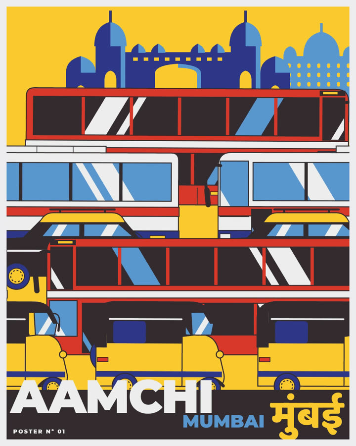
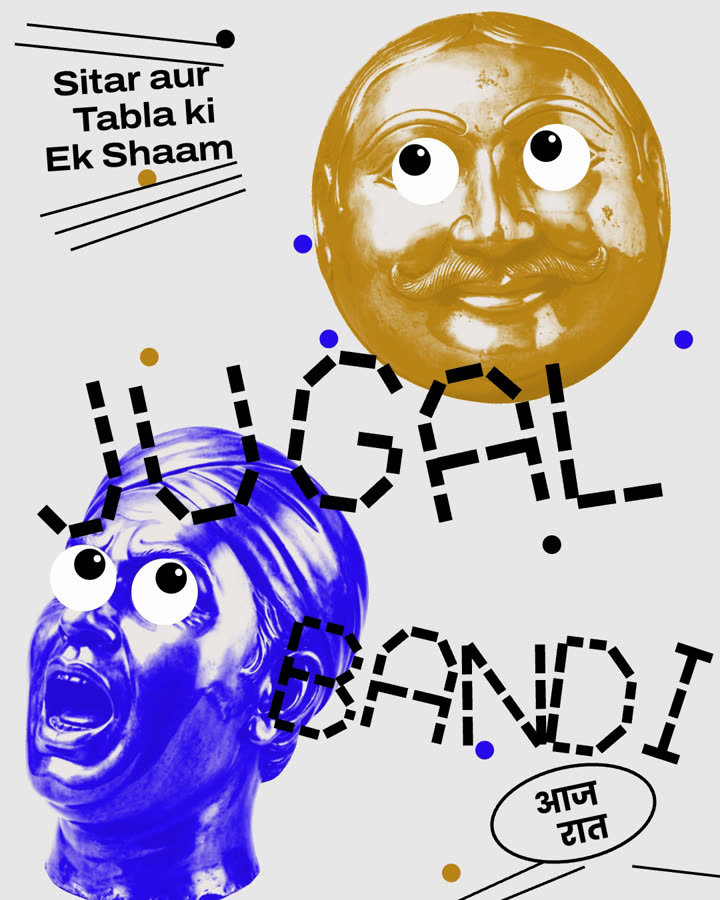
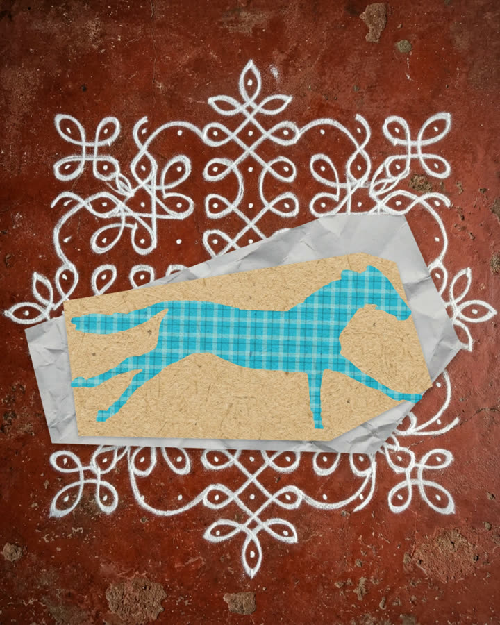

I made these three Indian moving posters with Claude Code: Mumbai traffic, a sitar and tabla jugalbandi, and a horse galloping across Indian textiles. This page is the whole workflow, plus the skill that lets Claude Code do the same for your idea.
On your phone? The skill runs on a computer, so the easiest way is to send this page there and download it on the computer.
Downloading on the phone works too: the file lands in Files › Downloads (iPhone) or Downloads (Android) as moving-posters.zip.



A skill is a folder of instructions and tools that Claude Code reads when the job needs it. This one knows how to study a poster you like, split your idea into layers, give each layer a simple motion, and render a loop with no visible jump. You describe the poster, and it does the building.
On a Mac with Homebrew, this installs the last three:
brew install node ffmpeg python pip3 install numpy
On Windows or without Homebrew, open Claude Code and type: "Install Node.js, ffmpeg and Python with numpy on this computer." It will walk you through it.
The file you get is moving-posters.skill. It's a zip of one folder. Put that folder in Claude Code's skills folder:
mkdir -p ~/.claude/skills unzip ~/Downloads/moving-posters.skill -d ~/.claude/skills/
Got it on your phone as moving-posters.zip? It's the same file. Move it to your computer (AirDrop, email or Drive) and use moving-posters.zip in the command above.
If your Claude app shows a "Save skill" button on the file, that works too. Restart Claude Code afterwards so it picks the skill up.
You do the deciding, Claude Code does the building. Each step has the kind of thing to type. Change the words to your own idea.
One place, festival or everyday thing, and the words on the poster. Choose 4:5 (1080×1350) for a feed post or 9:16 (1080×1920) for Reels. A loop of 8 to 12 seconds feels alive without repeating too soon.
I want a moving poster of Kolkata's yellow taxis crossing Howrah Bridge, with the title "Kolkata" in Bengali and English. 4:5, a 12-second loop.
This is the step that makes it look professional. Attach a poster or a screen recording of a moving poster whose look you want. Ask Claude Code to study it before building anything: the exact colours, the texture, the font, and how it moves. It writes those down as a short style sheet and builds only from that.
Here's a poster whose style I love. Before you build anything, study it: sample its exact colours, zoom in on the texture, find the closest free font, and measure how it moves. Write it all down as a style sheet and show me.
Use a poster you like for its look, then make the subject your own.
The skill has three finished posters to begin from, so nothing starts from a blank page. Claude Code picks the closest one, copies it into a new folder, and changes it to your idea.
Use the moving-posters skill. Start from the closest template and set up a new poster folder for this idea.
Flat graphic looks are drawn entirely in code: vehicles, buildings, letters, patterns. Photo looks need a few pictures. Use your own photos, free museum photos (The Met's Open Access collection is free for any use), or an image tool you already use. Fonts come from Google Fonts, which are free.
Draw the taxis, the bridge and the river in code, in the style sheet's colours. Use a free Google font that matches the reference, plus one with Bengali letters.
Before any video, look at a few stills next to your reference. Fixing a position or a colour on a still takes seconds; fixing it after a render takes a render.
Show me three still frames next to the reference at the same size. Point out anything that doesn't match: colours, texture, font, how big things are.
Split the poster into layers. Most of them stay still; the title and the landmark usually never move. Every moving layer gets one simple motion: traffic that stops and goes, a kite that sways, letters that glide, a sun that turns slowly. Every motion repeats a whole number of times in the loop, so the end lands exactly on the start.
Animate it in layers. Keep the title and the bridge still. Taxis stop and go in two rows at different speeds, the river shimmers slowly. Make it a seamless 12-second loop.
Claude Code compares the first and last frame to prove the loop has no jump, then renders the video. A 12-second poster renders in about fifteen seconds on a laptop, and every change after that is just another quick render.
Check that the loop is seamless, render the final video, and measure its motion so I can compare it with the reference.
Rows of vehicles in stop-and-go traffic; the landmark and title stay still. Drawn fully in code. parallax-traffic
Cut-out faces in one ink, googly eyes, dashed letters. Everything glides between a few layouts, then holds. kinetic-collage
A horse gallops at six drawings a second, on a new Indian paper or fabric each beat. paper-stop-motion
Here's a poster I made for our café's Diwali night. Separate it into layers, retype the title as real text, and make the diyas flicker and the rangoli turn slowly. Keep everything else still. Seamless 10-second loop, 9:16.
Make three more versions of this poster for Pune, Chennai and Jaipur. Keep the style sheet, change the vehicles, the landmark and the title.
The label over the white bus is hard to read. Make labels that sit on the artwork dark with light text, and check every label at phone size.